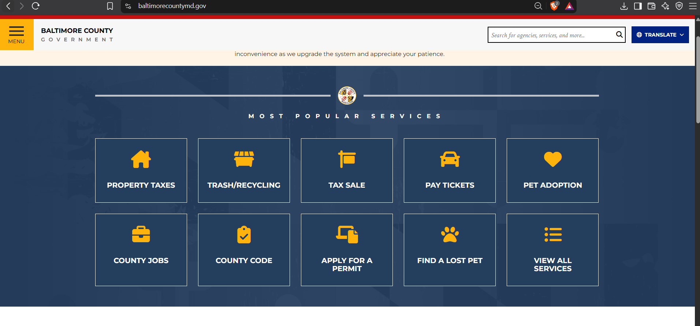

1. What is the URL of the website?
2. What is the name of the website?
Baltimore County Government Website.
3. Who is the site's target audience?
People who live in Baltimore County and need to find local services.
4. How is the site organized?
It has big buttons on the front page for things like paying bills, checking trash days, and looking up county laws.
5. Which CRAP Design Principle does the site use? Provide at least one example.
It uses Alignment. All the text blocks and buttons are lined up in straight columns so it looks neat.
6. What is the Audit Score according to the Accessibility Checker?
The score is 82/100.
7. Screenshot of the website

8. What is the site's effectiveness? Does it help users complete actions accurately?
Yes, because the buttons take you directly to the forms you need without getting lost.
9. What is the site's efficiency? Can users perform tasks quickly?
Yes, there is a big search bar right at the top so you can just type what you want immediately.
10. How is the engagement? Is it pleasant to use and appropriate for its industry/topic?
It is good for a government site. It uses simple blue and white colors which look normal and official.
11. Recommendation to improve this website
I think they should make the text links at the very bottom of the page bigger because they are too small to read.